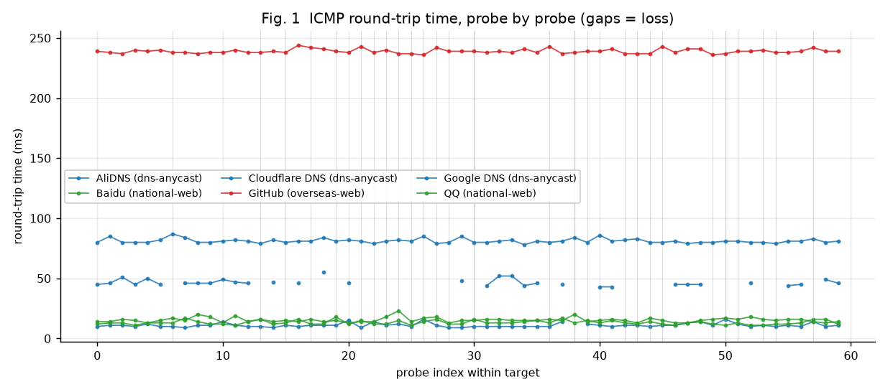
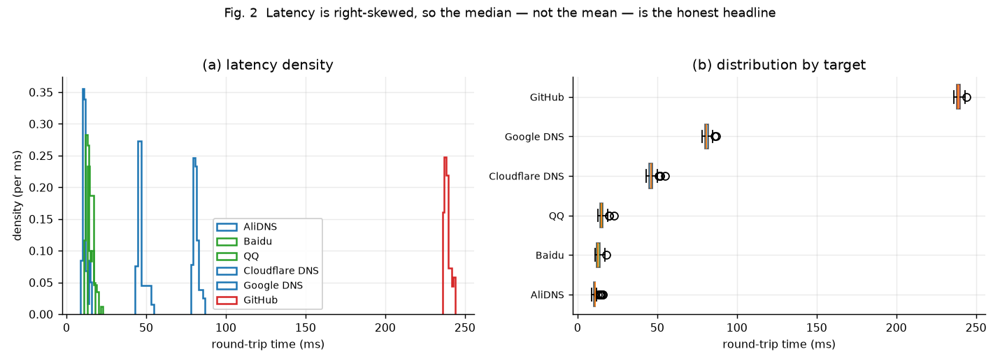
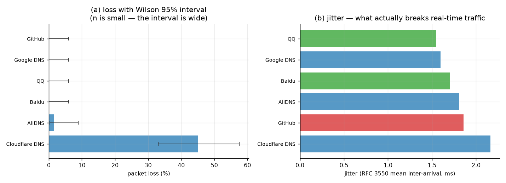
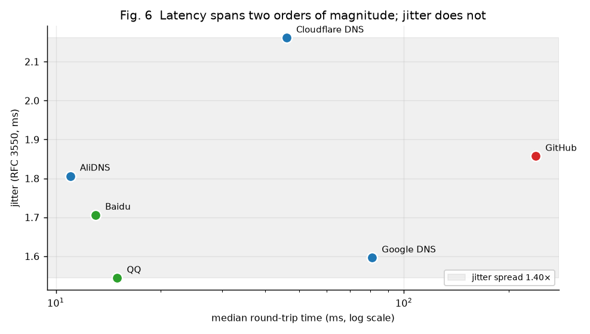
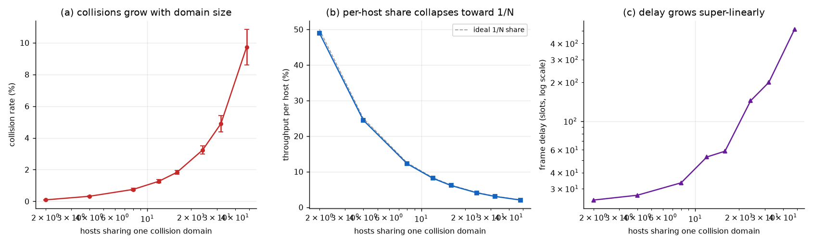
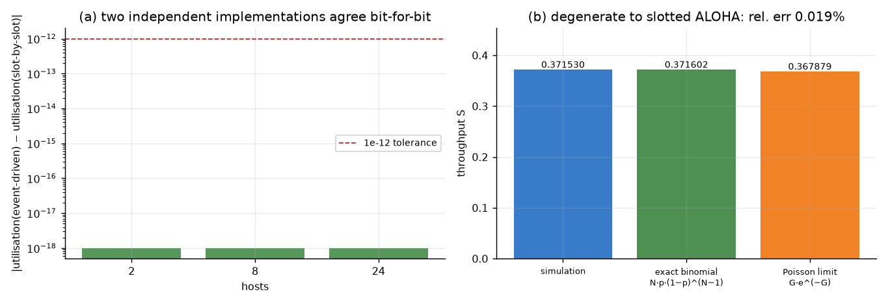

网络延迟的真实测量 + 共享以太网介质的可验证建模。 每个数字都由仓库脚本在运行时产出，并附带不确定度 —— 页面里没有一个手写数字。
采集对本机以外的 6 个目标各发起 60 次 ICMP 回显请求，共 360 个样本。 质量门禁只打标不丢行 —— 超时记录被完整保留为显式缺失值，否则丢包率会被系统性低估。
| target | tier | ok / sent | loss % [Wilson 95% CI] | median ms [bootstrap CI] | p95 ms | jitter ms |
|---|---|---|---|---|---|---|
| AliDNS | anycast DNS | 59/60 | 1.7% [0.3, 8.9] | 11.0 [10.0, 11.0] | 14.1 | 1.81 |
| Baidu | domestic web | 60/60 | 0.0% [0.0, 6.0] | 13.0 [12.0, 13.0] | 16.1 | 1.71 |
| domestic web | 60/60 | 0.0% [0.0, 6.0] | 15.0 [15.0, 16.0] | 19.1 | 1.54 | |
| Cloudflare DNS | anycast DNS | 33/60 | 45.0% [33.1, 57.5] | 46.0 [45.0, 46.0] | 52.0 | 2.16 |
| Google DNS | anycast DNS | 60/60 | 0.0% [0.0, 6.0] | 81.0 [80.0, 81.0] | 85.0 | 1.60 |
| GitHub | overseas web | 60/60 | 0.0% [0.0, 6.0] | 239.0 [238.0, 239.0] | 243.0 | 1.86 |
6.0% —— 这是 Wilson 区间给出的结论，
而不是“没问题”。报点估计而不报区间，是这类作业最常见的错误。


抖动按 RFC 3550 的平均到达间隔抖动计算，不等于时延的标准差。 真正破坏语音/视频体验的是相邻包的相对抖动，而不是整体离散程度。

实测告诉我们网络“现在”如何表现；仿真告诉我们共享介质“为什么”会在主机变多时崩塌。 模型跑的是标准 10 Mb/s 以太网时隙参数（1 时隙 = 512 bit = 51.2 μs， 成帧后的数据帧占 24 时隙，冲突阻塞占 1 时隙），饱和负载， 每个配置 8 个独立随机种子 × 每次 200,000 个时隙。
| hosts | utilisation % | collision % | per-host % | delay (slots) | fairness |
|---|---|---|---|---|---|
| 2 | 97.93 ± 0.03 | 0.094 ± 0.013 | 48.97 | 24.5 | 0.500 |
| 4 | 97.91 ± 0.02 | 0.319 ± 0.034 | 24.48 | 26.7 | 0.278 |
| 8 | 97.87 ± 0.03 | 0.752 ± 0.087 | 12.23 | 33.3 | 0.144 |
| 12 | 97.82 ± 0.03 | 1.267 ± 0.097 | 8.15 | 52.8 | 0.140 |
| 16 | 97.76 ± 0.04 | 1.834 ± 0.124 | 6.11 | 58.6 | 0.120 |
| 24 | 97.61 ± 0.04 | 3.242 ± 0.261 | 4.07 | 143.9 | 0.133 |
| 32 | 97.43 ± 0.07 | 4.897 ± 0.512 | 3.04 | 199.7 | 0.162 |
| 48 | 96.91 ± 0.14 | 9.722 ± 1.122 | 2.02 | 513.1 | 0.262 |


| 局限 | 影响 | 缓解方式 |
|---|---|---|
| 每目标仅 60 个探针 | 零丢包的上界只能压到 6.0% | Wilson 区间如实暴露宽度；--count 可调大 |
| ICMP 常被中间设备限速 / 降优先级 | 观测到的“丢包”可能是策略而非拥塞 | 报告为“观测丢包”，不断言成因 |
| 单一主机、单一接入网 | 结论不能外推到其他网络 | 复现命令开放，换机即可交叉验证 |
Windows ping 为毫秒分辨率 | 亚毫秒差异不可见 | time<1ms 统一记录为 1 ms，并由质量门禁打标 |
| 饱和负载 + 永久排队 | 放大 BEB 捕获效应、低估公平性 | 已在页面中显式打折说明，不作为真实局域网预测 |
门禁只打标、不丢行：缺失、重复序号、非正值、极端值都被计数并保留在数据中。
| label | total | ok | missing | duplicate seq | nonpositive | extreme |
|---|---|---|---|---|---|---|
| AliDNS | 60 | 59 | 1 | 0 | 0 | 0 |
| Baidu | 60 | 60 | 0 | 0 | 0 | 0 |
| Cloudflare DNS | 60 | 33 | 27 | 0 | 0 | 0 |
| GitHub | 60 | 60 | 0 | 0 | 0 | 0 |
| Google DNS | 60 | 60 | 0 | 0 | 0 | 0 |
| 60 | 60 | 0 | 0 | 0 | 0 |
git clone https://github.com/heee-a/net-analysis-lab.git
cd net-analysis-lab
pip install -r requirements.txt
pytest # 40 个测试
python scripts/run_pipeline.py --count 60 # 采集 + 分析 + 出图
python scripts/run_pipeline.py --reuse # 不发新包，重算已有样本
python scripts/build_site.py # 从 data/ 重新生成本页面采集依赖系统自带的 ping，不需要管理员 / root 权限（这也是不使用裸套接字的原因）。
解析器语言中立：Windows 中文、Windows 英文、Linux/macOS 的输出都能解析，三种情况都有对应的单元测试。